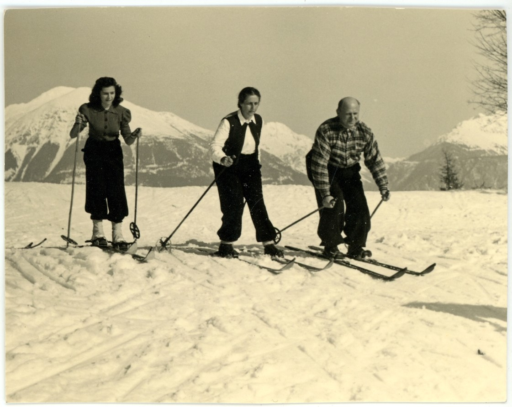
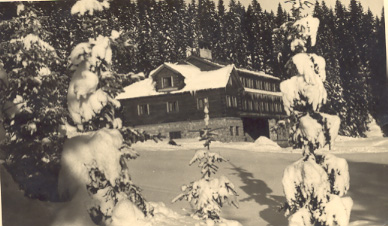

Skijanje
KRONOLOGIJA
1924.
u sklopu VŠK osnovana sekcija za zimske sportove (najprije klizanje, a od 1926. skijanje i rodlanje)
1932.
na Ivančici uređena prva skijaška staza
7. studenoga 1932.
osnovana skijaška sekcija pri Planinarskom društvu Ravna gora


Sa skijanja, GMB 73569
1932. - 1940.
u Varaždinskoj gimnaziji održavaju se natjecanja u skijanju i sanjkanju (natječe se i na Varaždinbregu i Ravnoj gori)
1935.
osnovana skijaška sekcija unutar Slavije
8. studenoga 1936.
u Varaždinu počeo s radom Ski-klub Varaždin (predsjednik Zvonimir Suligoj, osnivač Dragan Grims)
1936.
na Pohorju u Sloveniji održano prvo službeno skijaško prvenstvo Varaždina (Zvonimir Suligoj, Ema Semrekar, Teodor Siber i Antun Rak)

Sa skijaškog tečaja na Pokljuki, 1934.0, GMV PO 2876/5
31. siječnja 1937.
održano prvo službeno skijaško prvenstvo grada Varaždina
1940.
osnovana skijaška sekcija u sklopu VŠD-a
1941.
na Ravnoj gori sagrađena 15-metarska skijaška skakaonica
1942.
na Ravnoj Gori održano prvo natjecanje u skijaškom trčanju
1950.
na Varaždinbregu održano prvenstvo grada u skijanju i skokovima
1963.
natjecanje u skijaškim skokovima u Babincu
1977.
osnovano Skijaško društvo „Varaždin“ koje djeluje na Pohorju i u Austriji